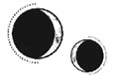

CAPÍTULO 68
Mayus 1789
Tan pronto como accedió, Kaine se puso de pie y la soltó.
—Ya es tarde. Deberías descansar. Mañana iré a ver qué encuentro. Creo que Shiseo preparó un par de cosas para ti.
—Espera —dijo ella apresuradamente, agarrándolo para que no se alejara. El equilibrio que habían alcanzado amenazaba con desmoronarse en cuanto se reabrió el espacio físico entre ellos—. No… no te vayas.
Kaine levantó la vista hacia ella antes de volver a esconderse tras una máscara de fingido desinterés.
—¿Por qué?
Helena apretó los puños.
—Cada vez que te vas, nunca sé qué… qué versión de ti me encontraré la próxima vez que nos veamos. Tengo todos los recuerdos… desordenados y la situación me resulta confusa. La imagen que tengo de ti cuando no estás es la de una persona muy… muy fría.
Kaine escondió una mano detrás de la espalda, pero no logró ocultar a tiempo la crispación de sus dedos.
—¿Qué quieres que haga entonces? —preguntó con una aparente tirantez.
—Quiero que te quedes —dijo ella en un susurro.
Se levantó para ir a la cama y, al pasar al lado de Kaine, sintió que quedaba firmemente anclada a la realidad, si bien no al presente.
«Volvía a la cama mientras él se quitaba el abrigo y lo dejaba sobre el respaldo del sofá. Iba a tumbarse boca arriba, a clavar la mirada en el dosel y a intentar mantenerse quieta…».
Se detuvo en seco. Los pulmones se le constriñeron hasta que se quedó sin aliento y la cabeza empezó a dolerle como si fuera a partírsele en dos.
¿Cómo iban a superar aquello?
La voz de Kaine la sacó de su ensimismamiento. Volvió a mirarlo.
—Será mejor que me vaya —dijo negando con la cabeza—. Regresaré mañana e… intentaré…
—No. —Ella también negó con la cabeza—. Tengo que acostumbrarme a ti de nuevo. Necesito recordar lo nuestro.
Kaine exhaló y se sentó al borde de la cama, como tantas otras veces había hecho antes, entrelazando su mano con la de ella y contemplando la estancia.
Le temblaban los dedos y, pese a lo mucho que se estaba esforzando por dejarlos quietos, la tensión solo empeoraba la situación. Helena no entendía de dónde venían esos espasmos.
—¿Por qué ya no te curas? —le preguntó.
—Quedamos tan pocos inmarcesibles que Morrough bebe mucha más energía de los que estamos vivos —explicó él sin mirarla a los ojos—. Ahora tardo más en regenerarme. Pero… no sé por qué no dejan de temblarme las manos. Supongo que es el precio de la arrogancia.
Durante todos aquellos meses, Helena lo había estado viendo consumirse sin ser consciente de ello. Kaine había estado erradicando a los inmarcesibles pese a saber que, con cada muerte, el castigo al que se vería sometido se intensificaría, al tiempo que su capacidad de regeneración disminuiría.
—Lo siento muchísimo —susurró, y él se encogió como si lo hubiera golpeado al decir eso y estuvo a punto de apartar la mano de la de ella.
—No me pidas perdón —le espetó con una mirada fulminante.
—Pero estás enfadado conmigo, ¿no?
Kaine desvió la mirada y la dejó vagar por la habitación mientras tragaba saliva.
—Eso no significa que tengas motivos para disculparte.
—¿Por qué no?
—Porque… —se le quebró la voz y agachó la cabeza—. Yo debería ser el primero en pedir perdón y n-ni… ni siquiera sé por dónde empezar. Tenía la esperanza de que no recordaras nada de esto. Si te hubiera mentido sobre el rescate de Bayard y te hubiera dejado marchar, nada habría pasado.
Helena se incorporó.
—Me habría matado. Que me hubieras hecho huir y te hubieran descubierto porque yo te había convencido de rescatar a Lila me habría matado. Volvería a pasar por todo aquello sin dudarlo un segundo con tal de salvarte. No cambiaría ni un segundo.
Kaine se volvió para mirarla con una mezcla de sorpresa y enojo surcándole las facciones.
—Pero no me salvaste —dijo al fin cuando consiguió hablar—. Nos sumiste a ambos en un infierno durante dos años.
Una bofetada le habría dolido menos. Helena se quedó helada, perdió todo el color.
—Intenté volver… —insistió con voz temblorosa—. Te lo juro.
La expresión de Kaine se tornó apesadumbrada.
—Lo sé. No quería decir que…
Helena se apartó, tenía la sensación de que le iban a entrar ganas de vomitar si seguía mirándolo.
—No deberías haber dado por hecho que estaría dispuesta a perderte. ¿Creías que me importabas menos porque tenía otras obligaciones? ¿Que mis sentimientos por ti no estaban a la altura de los tuyos por mí? Hice todo, absolutamente todo lo posible por mantenerte a salvo. Ni te imaginas lo que hice por ti.
—Lo que quería decir es que…
—Cada vez que me preguntabas si era tuya, te prometía que sí, que para siempre. Y un «para siempre» no tiene excepciones ni fecha de vencimiento.
Helena se despertó con un dolor de cabeza insoportable. Se quedó tumbada en la cama mientras trataba de orientarse en la oscuridad. Notaba los dedos de Kaine entrelazados con los suyos y descubrió que él estaba sentado en el suelo, junto a la cama, con la cabeza caída hacia un lado.
Se acercó a él un poco para contemplarlo en la penumbra.
Su problema eran los espacios vacíos, los momentos en que sus recuerdos giraban como una moneda en la que el pasado y el presente se situaban en caras opuestas. Sin embargo, teniéndolo cerca, pese a las alteraciones del tiempo, Helena sabía que Kaine era suyo. Que lo era igual que antes.
Kaine la había amado. Pese a que había estado convencido de que la suya era una relación imposible, sus sentimientos por ella nunca habían flaqueado.
—Voy a cuidar de ti —articuló en silencio.
Notó enseguida el momento en que él se despertó. La tensión se adueñó de su cuerpo, se le abrieron los ojos de golpe y sus dedos se le crisparon. Sin embargo, toda su rigidez se disipó cuando reparó en Helena. Se puso de pie, se inclinó sobre ella y la observó con atención.
—¿Te encuentras bien?
—Solo es un dolor de cabeza.
Kaine le tocó la frente y alivió la presión que se le acumulaba detrás de los ojos con su resonancia.
—¿Me podrías traer algo para empezar a investigar?
—Creo que deberías descansar —dijo frunciendo el ceño con preocupación.
—No. Pasaré el día nerviosa si no tengo algo con lo que distraerme.
Kaine suspiró y, aunque no le llevó la contraria, Helena sabía que estaba considerando algo mientras la observaba en silencio. Al cabo de unos instantes, respiró hondo y le cogió la mano.
—Voy a confiar en ti. Te pido, por favor, que no hagas que me arrepienta.
Helena no entendió el alcance de sus palabras hasta que le cerró los dedos en torno a su muñeca y la banda de metal que se la rodeaba se soltó de pronto. Contempló, estupefacta, cómo se la quitaba y extraía el tubo de anulitio del interior de la muñeca. La perforación tenía los bordes irregulares, surcados de cicatrices por todas las veces que se había caído o había ejercido demasiada presión sobre la zona.
Le sorprendió ver lo pequeños que eran tanto el conducto como la herida. Siempre había tenido la sensación de que serían más grandes, de que habían ocupado todo el espacio entre los huesecillos de sus muñecas. Extendió los dedos y notó su resonancia por primera vez en mucho tiempo.
—Todavía tendrás que llevar los grilletes —señaló Kaine con voz estrangulada—, pero confío en que tendrás cuidado y no matarás a ningún miembro del servicio ni intentarás huir.
Helena logró asentir, temblorosa y demasiado abrumada como para decir nada.
—Tendré que volver a colocarte el conducto de anulitio cuando Stroud venga por aquí o se dará cuenta de que algo no encaja. Espero que entiendas por qué no he podido hacer esto antes.
Ella volvió a asentir.
Kaine respiró hondo, le cogió la otra muñeca y le quitó el grillete restante. Luego, le dio un momento para que moviera las muñecas y disfrutara de la sensación del poder regresando a sus dedos.
—No era consciente de lo esencial que es la resonancia para mí hasta que la perdí —comentó llevándose las manos a la cabeza para calmar su cerebro inflamado. Su mente era un paisaje extraño, como si dos versiones de sí misma se hubieran solapado y no supiera por cuál decantarse. Levantó la vista—. Creo que ya me veo capaz de comer un poco.
Siguió abriendo y cerrando los puños, deleitándose con la sensación de la resonancia. Kaine la observó, atrapado entre el deseo de mantenerla así, en esa casa donde al menos podía tener el control de todo lo que ocurriera, y el rechazo que le producía tenerla encerrada como si fuera una prisionera.
Tras haberse visto obligado a tomar una decisión, había elegido que fuera libre.
Helena no quería que se arrepintiera de ello.
Llevaba un rato intentando reparar las lesiones que los conductos de anulitio le habían dejado en los músculos y los tendones, pero las cicatrices eran demasiado antiguas y complejas como para desaparecer por completo. El tiempo y el daño habían provocado que sus dedos se movieran con torpeza, que su antigua soltura hubiera desaparecido casi por completo. Al cabo de un rato, se dio por vencida y extendió las muñecas hacia Kaine para que volviera a rodeárselas con la cinta de cobre.
—Te traeré todo lo que encuentre para tu investigación —le dijo guardándose los tubos de anulitio.
Cuando se disponía a levantarse, Helena le cogió la mano. Ahora que por fin se había librado de la debilidad forzada del anulitio, se aferró a él hasta que se volvió para mirarla.
—Ten cuidado —le dijo—. No… —Las palabras se le atragantaron, así que le dio un apretón en la mano—. Vuelve conmigo, ¿vale?
—Por supuesto.
Cuando Davies le entregó la hoja de papel, ya era mediodía. Helena se sentó a descifrar la variedad de notas escritas con una caligrafía que no supo reconocer. Casi todas utilizaban abreviaturas alquímicas y glosas con las que no estaba familiarizada, pero identificó la letra fluida de Shiseo e incluso la de Kaine.
Había numerosos sellos parciales y fórmulas. Algunos le resultaban extrañamente familiares y los estudió con sumo cuidado, analizándolos hasta que los símbolos se desdibujaron en el papel.
Entonces se hizo un ovillo sobre el costado, se cubrió la cabeza con ambos brazos y se quedó dormida.
Cuando despertó, Kaine estaba sentado a su lado, hojeando una guía sobre embarazos.
Helena se estremeció al verlo. No quería pensar en el bebé. Sabía que estaba ahí, creciendo en su interior, pero su existencia le resultaba abrumadora y tenía asuntos más urgentes en los que centrarse.
Kaine cerró el libro de golpe.
—¿De dónde has sacado las notas que me enviaste? —preguntó con los ojos cerrados para contener el dolor de cabeza.
—Si no me equivoco, algunas de ellas son de Bennet. Shiseo recogió toda la información sobre sellos no metalúrgicos que pudo encontrar. Me dijo que era algo en lo que te había visto trabajando.
Una nueva laguna emergió en su memoria. ¿Había estado investigando sobre ese tema?
—No lo recuerdo.
¿Cuánta información más le faltaba?
—Estoy seguro de que acabarás acordándote.
Pero se les acababa el tiempo. Helena abrió los ojos; su mente trabajaba con dificultad, como una máquina con los engranajes obstruidos.
—Creo que nunca he utilizado sellos para la vivemancia o la animancia. —Frunció el ceño—. Quizá no funcionaban con fórmulas celestiales o elementales. ¿Alguna vez has usado algún otro tipo de numeración con un sello?
Kaine negó con la cabeza.
La conversación sonaba tan forzada que resultaba casi dolorosa. Helena se abría camino a ciegas por su propia memoria para intentar resolver un rompecabezas sin recordar qué piezas tenía en las manos. Mientras expuso sus ideas, Kaine asintió con la expresión atenta que requerían las circunstancias, pero no dejaba de mirar el reloj y se mostró impasible cuando intentó que participase.
Poco a poco, comprendió que todo aquello era una pantomima indulgente. Lo de las notas y lo de quitarle los grilletes no era más que un intento por apaciguarla. Quería hacer lo mismo que con la biblioteca: mantenerla ocupada y motivada para que recuperara fuerzas, pero no confiaba en que la investigación fuera a cambiar su situación. Intentaba tenerla bajo control.
Helena dejó de hablar y Kaine asintió como si coincidiera con lo que se suponía que acababa de decir antes de ponerse de pie.
—Me aseguraré de conseguirte lo que necesitas.
Se dispuso a marcharse, pero se detuvo en seco y se volvió. Miró a Helena y su mirada recorrió la habitación durante un buen rato antes de volver a hablar:
—Sé que… —Se detuvo, cerró el puño y escondió la mano detrás de la espalda. Luego, parpadeó y su mirada se perdió en algún punto detrás de Helena—. Según tengo entendido —comenzó de nuevo con tono distante—, para cuando hayas escapado de Paladia, ya no podrás interrumpir el embarazo por métodos sencillos. Sin embargo, todavía te quedará la opción de la vivemancia o la cirugía. Cuando te vayas, intentaré proporcionarte los materiales necesarios para que puedas encargarte de ello, pero avísame si se te ocurre algo en concreto. Me aseguraré de conseguírtelo.
Antes de que Helena tuviera la oportunidad de responder, Kaine se dio la vuelta y se marchó.
Ella se recostó, dejó el papel a un lado y se obligó a mirarse el cuerpo.
Se tocó la ligera protuberancia que tenía en el vientre con dedos vacilantes, a regañadientes, justo por debajo del ombligo. La mano le temblaba casi con violencia cuando se exploró con su resonancia.
Ya había visto al bebé en la pantalla de resonancia, pero la situación era distinta cuando usaba su propio poder. Se sorprendió al descubrir lo pequeño que era y apartó la mano de inmediato, con el corazón latiéndole de manera irregular.
Helena nunca había pensado en tener hijos. No era algo que estuviera a su alcance, así que lo que quisiera no importaba. Un mes antes, se habría quitado la vida sin dudar para evitar que el bebé, cualquiera que fuera, cayera en manos de Morrough. Para ella, el embarazo solo se reducía a ese contexto.
Sin embargo, si lograba escapar y la decisión fuera solo suya, ¿qué haría?
Cuando Davies subió a llevarle la cena aquella noche, le trajo también una plancha de grabado y un punzón. Helena sostuvo la herramienta, muda de incredulidad. De haber encontrado algo así en sus incursiones, habría intentado atravesarse el corazón sin pensárselo.
Kaine la conocía muy bien.
—¿Está Kaine por aquí? —Davies negó con la cabeza—. Cuando regrese, ¿te importaría decirle que quiero hablar con él?
Ya casi no había luz cuando la puerta se abrió y Kaine se quedó en el umbral, como si no supiera si debía entrar o no.
Helena levantó la vista de la hoja de notas, lamentándose por la distancia que los separaba.
—¿Te había contado que me sometí a una esterilización?
Kaine cerró la puerta a su espalda.
—No, pero me lo imaginaba. Era una práctica habitual entre los fieles de la Fe. Uno de los mayores temores de mi padre era que descubrieran mi vivemancia y me sometieran a la operación, porque eso habría acabado con nuestra familia.
—Vaya.
Le alegraba saber que nunca habían tenido esa conversación.
Kaine apretó los dientes.
—Lo que no esperaba era que Stroud fuera capaz de revertirlo. Pensaba que te salvarías de participar en el programa.
Helena se tocó el vientre distraídamente.
—Quiero hablar de lo que has dicho hace un rato, antes de marcharte.
La expresión de Kaine se volvió indescifrable y a Helena se le formó un nudo en el pecho. La había mirado así en más ocasiones de las que le gustaría recordar, tanto en el pasado como en el presente. Cerró los ojos y trató de dejar a un lado todos esos recuerdos.
—¿Te importaría acercarte? —Notaba la boca seca—. Me cuesta hablar teniéndote tan lejos.
Era evidente que Kaine prefería mantener aquella conversación a distancia, pero Helena lo necesitaba cerca. Se miró las manos.
—No esperaba que pensaras que interrumpiría el embarazo cuando escapara. O sea, entiendo por qué podrías imaginarlo, pero no voy a hacerlo.
Levantó la mirada para intentar descifrar su reacción, pero él no la estaba mirando.
—Puede que cambies de idea una vez que seas libre —dijo sin rastro de emoción en la voz, como si el tema no tuviera nada que ver con él.
—No lo haré —insistió ella negando con la cabeza.
A Kaine se le crispó la mandíbula y la tensión se le acumuló en los ojos.
—No tienes por qué comprometerte a nada por mí. —Le temblaba la voz—. Haz lo que quieras.
—Eso voy a hacer, pero quería que lo supieras. Si no siguiera adelante con el embarazo, me pasaría el resto de mi vida preguntándome cómo habría sido: si el bebé tendría tus ojos o los míos; si sería normal, si nacería con resonancia y cuál sería su poder en ese caso. —Hablaba atropelladamente, porque sentía un nudo en la garganta—. Me preguntaría si tendría el pelo como el mío o si le crecería liso como a ti. Si tengo que seguir adelante sin ti… Si… si mueres…, quiero poder hablarle de ti. —Tragó saliva—. Nunca he tenido oportunidad de hablarle de ti a nadie. Me gustaría que alguien supiera cómo eras.
Kaine la miró.
—¿Cómo soy? —dijo al fin—. ¿Cómo crees que soy exactamente? —Resopló y negó con la cabeza—. Tienes la oportunidad de empezar de cero. No cargues con el peso de mi recuerdo.
Helena sacudió la cabeza y la expresión de él se endureció. Todo en él se tensó.
—¿De verdad quieres pasar el resto de tu vida atada al hijo bastardo de un inmarcesible? Todo el mundo sabe que estás aquí y con quién te han mandado. ¿Crees que no averiguarán quién es el padre y cómo fue concebido? Da igual qué color de ojos tenga o lo mayor que se haga, porque seguirá siendo el descendiente de un asesino que te violó mientras estabas prisionera. Y todo el mundo lo sabrá. Sin excepción.
Estaba furioso. Cerró los puños como si quisiera zarandearla, pero se dio la vuelta con el rostro contraído en una mueca amarga.
—Deja todo esto atrás —dijo tomando una bocanada entrecortada de aire—. ¿Quieres tener hijos? Pues búscate a otra persona con quien tenerlos.
Helena lo miró con incredulidad.
—¿Me ves capaz de hacer algo así? ¿De huir y fingir que fuiste el monstruo del que tuve la suerte de escapar?
Kaine le lanzó una mirada de soslayo. Una resignación vacía se adueñó de sus facciones antes de volver a girarse hacia ella.
—Es la verdad.
Helena notó una presión en el pecho que hizo que se le encogiera el corazón.
—Kaine… —extendió una mano hacia él—, no eres un monstruo. No tuviste otra opción. Ninguno de los dos… Ambos hemos sido violados.
Él se apartó con una sacudida y esquivó sus dedos.
—Para.
Helena dio un paso adelante y le sujetó el rostro con ambas manos.
—Eres mío —le dijo mientras notaba los latidos irregulares de su corazón en el pecho—. ¿De verdad creías que seguiría odiándote cuando recuperara la memoria? —Negó con la cabeza—. Incluso antes de recordar, tú eras la única persona aquí que me hacía sentir segura. Pensaba que me estaba volviendo loca, pero una parte de mí siempre supo quién eras. ¿Leíste la nota que te dejé? Te quiero.
Kaine se estremeció como si sus palabras lo hubieran golpeado. Intentó mover la cabeza, pero ella se lo impidió y lo obligó a mirarla a los ojos.
—Lo digo en serio —insistió con firmeza, aunque la emoción hacía que le temblara la voz—. Te quiero y siempre te querré. Siempre.
Se puso de puntillas, lo atrajo hacia sí y lo besó.
Él se quedó inmóvil cuando sus labios se encontraron.
—Te quiero —repitió Helena contra su boca, como si quisiera hacerle respirar sus palabras.
Kaine permaneció quieto un instante más, pero luego se estremeció. Le sostuvo el rostro entre sus manos, enterró los dedos en su cabello y la atrajo con fuerza para acercarla a su cuerpo y besarla con desesperación.
La besó como si estuviera hambriento, como si estuviera intentando verter su esencia en su interior o consumirla por completo.
«Es mío. Es solo mío», eso era lo único en lo que Helena podía pensar. Le rodeó el cuello con ambos brazos y respondió a todas y cada una de las caricias de sus labios.
Kaine se apartó apenas lo suficiente para hablar, con la frente pegada a la de ella y una mano en torno a su nuca.
—Lo siento… Lo siento tanto… Siento muchísimo todo lo que te he hecho —dijo con la voz ronca y rota—. Te quiero. No tuve oportunidad de decírtelo antes de que te marcharas.
Helena pasó los días escribiendo notas, leyendo cada libro y cada texto que caía en sus manos, e intentando dar sentido a los conceptos inconexos que Shiseo había recogido sobre los sellos. Por fin se había acordado de Wagner, del boceto básico que el hombre les había proporcionado y de la infinidad de veces en que ella había intentado comprenderlo sin éxito.
Reconstruir el sello le parecía una tarea imposible, pero no se le ocurría otra opción. Era la única solución viable. A petición suya, Kaine le consiguió la obra completa de Cetus, así como las múltiples cartas, florilegios y textos de atribución dudosa que le habían adjudicado a lo largo de los siglos. Tenía la esperanza de entender mejor sus métodos alquímicos si lograba dar con las fuentes legítimas que documentaran su trabajo.
Sin embargo, por mucho que se esforzó en ignorarlo, una voz en su interior insistía en que estaba perdiendo el tiempo, en que era una ilusa. Si no había encontrado la solución antes, ¿por qué iba a dar con ella ahora? Pero decidió seguir adelante porque no concebía un futuro en el que dejara a Kaine atrás para morir.
Obligó a su mente a escapar del camino estrecho y asfixiante donde se había quedado atrapada y aceptó, en su lugar, el tedioso vacío al que había limitado sus recuerdos. Pero el esfuerzo le causaba tales dolores de cabeza que solo podía trabajar en intervalos cortos de tiempo.
Una mañana, se despertó y encontró a los sirvientes recogiendo todos los libros y las notas que había ido tomando para llevarlos a la habitación contigua a la suya. Hasta ese momento, la puerta que las comunicaba había permanecido cerrada siempre con llave. Kaine estaba de pie junto a la cama.
—Stroud va a hacernos una visita hoy. Tengo que ponerte el anulitio de nuevo.
A Helena se le secó la boca.
—Claro —accedió levantando las manos a regañadientes e intentando no encogerse de dolor cuando los tubos le atravesaron las muñecas y su resonancia volvió a desvanecerse.
Sabía que no era culpa de Kaine, pero una oscura parte de ella no podía evitar sentirse traicionada al bajar la vista para contemplarse sus manos, incapacitadas otra vez.
Se hizo un ovillo en la cama mientras el corazón le latía aterrorizado e intentó aliviar el miedo que sentía frotándose las muñecas mientras Kaine salía en busca de Stroud.
—Vaya, mira quién ha recobrado la consciencia —dijo la mujer cuando entró—. El Sumo Inquisidor estaba muy preocupado por ti. Creo que ya te daba por muerta. Parece que por fin habéis escuchado a vuestro padre.
Kaine apretó los dientes, sin molestarse en ocultar el rechazo que le causaba Stroud.
—Te recomiendo que te ciñas al motivo de tu visita.
Stroud se mordió los labios con una sonrisa contenida, dejó su bolsa sobre la mesita que había junto a la cama y se inclinó sobre Helena para hacerle una palpación y una exploración resonántica.
—Bueno, parece que lo peor ya ha pasado. Está empezando a ganar peso otra vez. —Presionó varios dedos contra la frente de Helena y aplicó una ínfima descarga de energía. Chasqueó la lengua—. Todavía tiene el cerebro bastante inflamado. Yo no confiaría en que sus recuerdos sobrevivan al resto del embarazo. El Estrago empeorará con el avance de la gestación si el bebé resulta ser como esperamos.
Fue una suerte que Stroud estuviera tan centrada en Helena, porque, de lo contrario, habría visto a Kaine palidecer.
—Ahora que vuelve a comer, tendréis que aseguraros de que sale al patio y hace algo de ejercicio. Cuanto más débil esté, menos probable será que el parto sea viable.
Stroud dejó de tocar a Helena y rebuscó en su bolsa hasta dar con la pantalla de resonancia.
—Veamos qué encontramos por aquí. —Kaine se dio la vuelta en cuanto retiró las mantas que cubrían a la chica y le subió la ropa—. Todo en orden —concluyó con una sonrisa de suficiencia. Señaló con la cabeza la vaga silueta que se veía palpitar en el gas—. Por suerte, no parece que el coma o los ataques hayan afectado al desarrollo del feto. Eso habría sido de lo más desafortunado. Creo que el embarazo está lo bastante avanzado como para poder…
Stroud entornó los ojos y la pantalla cambió: la figura que se veía en ella se expandió. La mujer perdió la sonrisa.
—Es una niña.